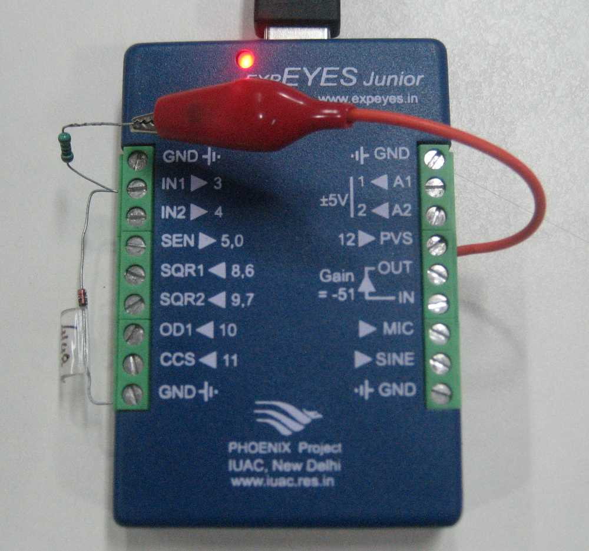

Diode I-V characteristic is plotted using the setup shown below. A 1N4148 silicon diode and a 1k resistor is connected in series from PVS to GND. The PVS output is varied from 0 to 5 volts and the voltage across the diode is measured in each case. The current is obtained from the voltage drop across the 1k resistor. The data is fitted with the diode equation to extract the ideality factor of the diode.
